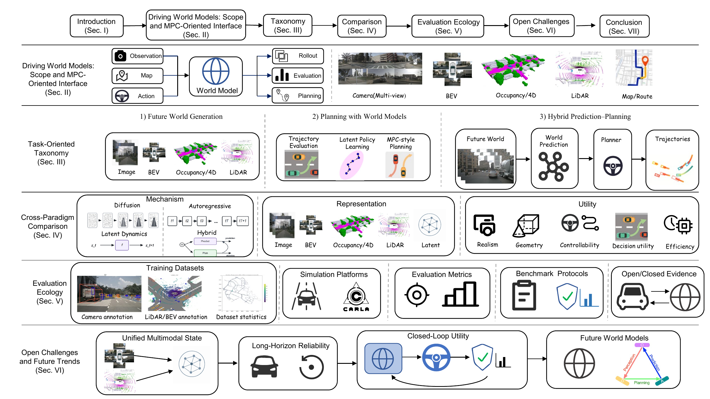
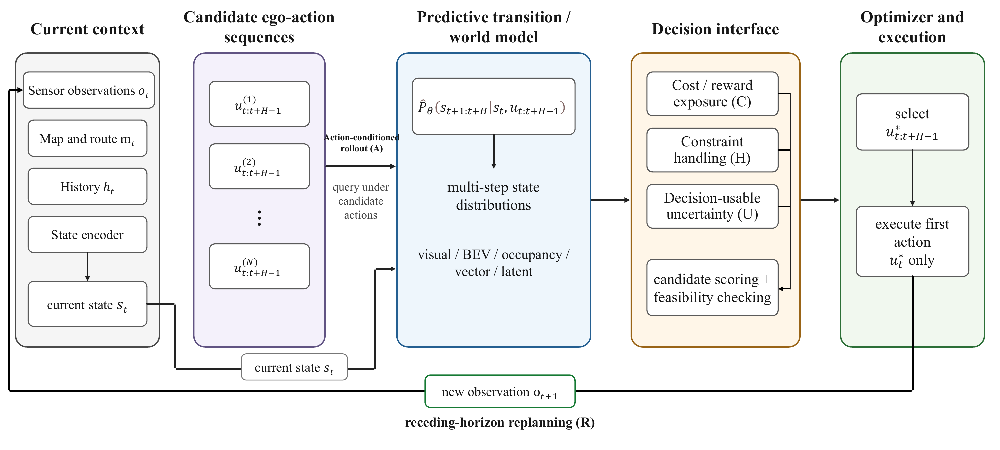
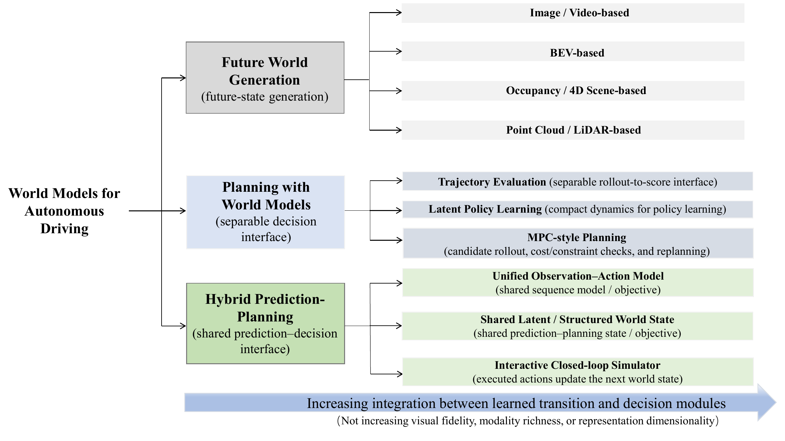
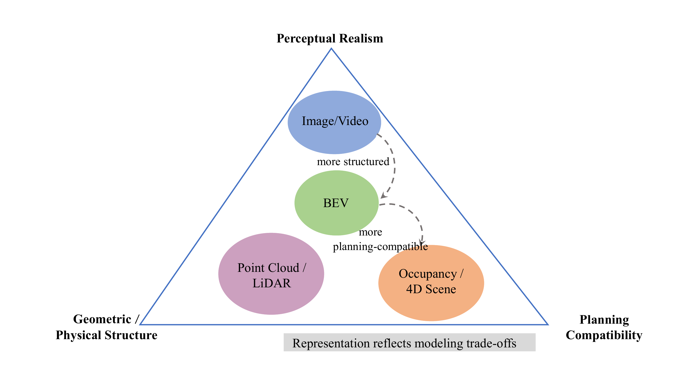
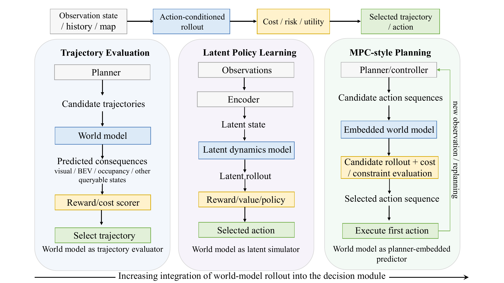
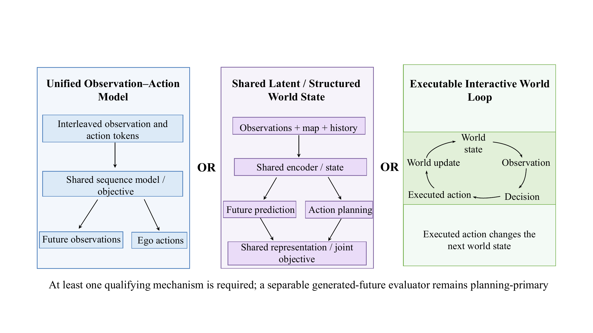
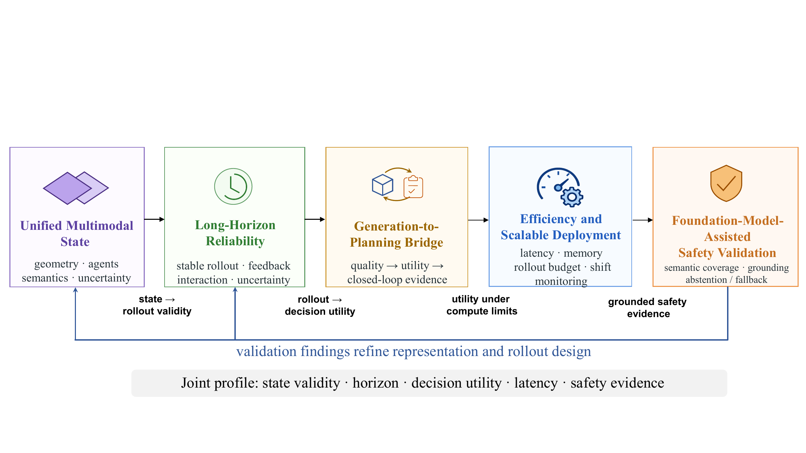

Task-oriented taxonomy
Separates future generation, planning with world models, and hybrid prediction-planning by primary role.
Survey manuscript2026MPC perspective
From Future Generation to Decision Making
Predicted futures should be judged by the decisions they support, not by realism alone.

The survey argument
It is a transition interface between observations, candidate actions, imagined consequences, and the next decision.
Autonomous driving systems must anticipate traffic evolution, compare candidate actions, and operate safely in closed loop. Recent world models address this need by generating future scenes, rolling out structured states, or exposing transitions for decision making.
This survey takes a model predictive control (MPC) perspective. We compare visual, bird's-eye-view, vectorized, occupancy, LiDAR, and latent states by the interfaces they expose to planners, then connect them to datasets, simulators, metrics, benchmark protocols, computational constraints, and deployment evidence.
Separates future generation, planning with world models, and hybrid prediction-planning by primary role.
Audits action-conditioned rollout, cost exposure, constraints, uncertainty, and receding-horizon replanning.
Controls protocol identity and prevents open-loop fidelity from being mistaken for closed-loop safety evidence.
From prediction to action
A useful world model must do more than forecast a likely scene. It must answer counterfactual action queries and expose decision-relevant consequences before the replanning deadline.

Can candidate ego actions condition the rollout?
Are rewards or planner-facing costs exposed?
Can constraints alter the selected behavior?
Is uncertainty usable by the decision module?
Is the transition tested in a receding horizon?
Role before modality
The categories follow the model's primary evaluated role. Visual output alone does not make a system hybrid.

Role 01
Rolls future scenes or structured states forward in visual, BEV, vector, occupancy, or LiDAR spaces. The primary evidence is generation, forecasting, controllability, or augmentation.

Role 02
Consumes imagined futures through trajectory evaluation, latent policy learning, or MPC-style rollout. The generated state and the decision module remain separable.

Role 03
Shares an observation-action objective, a latent or structured state, or an executable interaction loop across prediction and decision making.

Evidence, not assumed capability
26 systems shown
| Study | Role / state | Decision interface | MPC evidence A / C / H / U / R | Evaluation evidence |
|---|---|---|---|---|
| FIERYICCV 2021 | BEV prediction | Probabilistic BEV dynamics; future instances, motion, and trajectories. | - / - / - / E / - | nuScenes, Lyft; open-loop future prediction. |
| GAIA-1arXiv 2023 | Visual / AR | Video, text, and ego-action tokens generate future camera video. | E / - / P / P / - | Internal data; controllable visual generation. |
| DriveDreamerECCV 2024 | Visual / diffusion | HD map, box, and ego-action conditions generate video and layout. | E / - / P / P / - | nuScenes; generation, control, augmentation. |
| DriveDreamer-2AAAI 2025 | Visual / diffusion | Prompt-derived trajectories and layouts generate customized multi-view video. | P / - / P / P / - | nuScenes; rare-scene control and augmentation. |
| Copilot4DICLR 2024 | LiDAR / diffusion | Tokenized point-cloud history predicts future point-cloud tokens. | - / - / - / E / - | nuScenes, KITTI, AV2; open-loop forecasting. |
| OccWorldECCV 2024 | Occupancy / AR | Joint future occupancy and ego-trajectory tokens. | - / P / P / P / - | nuScenes; occupancy and open-loop planning. |
| DOMEarXiv 2024 | Occupancy / diffusion | Controllable multi-step occupancy generation. | P / - / P / E / - | nuScenes; long-horizon occupancy fidelity. |
| RangeLDMECCV 2024 | LiDAR / diffusion | Text- and layout-conditioned range-image generation. | - / - / P / E / - | nuScenes; fidelity, diversity, efficiency. |
| SparseWorldAAAI 2026 | Occupancy / sparse | Ego-conditioned sparse queries generate 4-D occupancy futures. | P / P / P / - / - | Perception, forecasting, planning, efficiency. |
| MP3CVPR 2021 | Trajectory / BEV | BEV map and agent futures feed interpretable planning costs. | P / E / E / P / P | Open- and closed-loop urban driving. |
| MBILNeurIPS 2022 | Policy / latent | Action-conditioned latent simulator supports imitation-policy rollout. | E / P / P / P / P | Closed-loop urban simulation. |
| DTPPICRA 2024 | Tree / trajectory | Candidate trajectory trees condition joint prediction and learned costs. | E / E / P / E / P | nuPlan-style open-loop planning. |
| Think2DriveECCV 2024 | Policy / latent | Action-conditioned latent transitions, rewards, and policy imagination. | E / E / P / - / P | Closed-loop CARLA-v2 policy evaluation. |
| Drive-OccWorldAAAI 2025 | Trajectory / occupancy | Candidate-conditioned occupancy exposes trajectory cost. | E / E / E / P / - | Forecasting and open-loop planning. |
| Drive-WMCVPR 2024 | Trajectory / visual | Candidate maneuvers generate futures for a separable image reward. | E / E / P / P / - | nuScenes planning and visual forecasting. |
| ReSimNeurIPS 2025 | Trajectory / visual | Action-conditioned video futures are scored by Video2Reward. | E / E / P / P / - | NAVSIM planning selection; non-reactive. |
| AdaptiveDriverICRA 2025 | Adaptive / latent | Task-adapted dynamics and policy under distribution shift. | E / E / E / P / E | Reactive nuPlan closed-loop evaluation. |
| WoTEICCV 2025 | Trajectory / BEV | Candidate trajectories query future BEV states and scores. | E / E / P / P / E | NAVSIM and reactive Bench2Drive. |
| Raw2DriveNeurIPS 2025 | Policy / latent | Aligned latent rollout supports policy optimization. | E / E / P / - / P | Closed-loop CARLA-v2 policy evaluation. |
| GenADECCV 2024 | Shared structured latent | Future and ego-plan generation share instance-centric scene tokens. | P / E / P / P / - | nuScenes open-loop end-to-end planning. |
| DrivingGPTICCV 2025 | Unified AR tokens | Observations and actions share one autoregressive sequence. | E / E / P / P / - | nuPlan and NAVSIM planning evidence. |
| World4DriveICCV 2025 | Shared physical latent | Intention-conditioned latent futures support trajectory selection. | E / E / P / E / - | nuScenes and NAVSIM; non-reactive. |
| DriveArenaICCV 2025 | Interactive simulator | Ego actions update a generative traffic world with feedback. | E / E / P / P / E | Reactive closed-loop simulation. |
| DriveLaWarXiv 2025 | Shared visual latent | Planning and video generation share plan-conditioned latent states. | E / E / P / P / - | Planning and video-generation benchmarks. |
| UniDrive-WMarXiv 2026 | Unified VLA tokens | Language, vision, and action tokens support planning and generation. | E / E / P / P / - | Unified tasks; limited reactive evidence. |
| WorldDrivearXiv 2026 | Vision-motion state | Trajectory-conditioned generation with a future-aware rewarder. | E / E / P / P / - | nuScenes and NAVSIM-v2; non-reactive. |
No systems match this search.
Keep claims within their evidence level
Protocol identity requires the same benchmark split, sensors, routes, agent reactivity, and metric implementation.
KITTI, nuScenes, Waymo, nuPlan, OpenDV, OpenOccupancy, and scene-specific datasets determine modality and scenario coverage.
CARLA, MetaDrive, LimSim, and Waymax differ in state, route, intervention, sensor, and agent-reactivity assumptions.
Perception, geometry, controllability, planning, risk, comfort, progress, rules, and calibration support different claims.
Core rule: a claim should not be transferred upward without the corresponding experiment. Visual fidelity does not establish planning utility, and non-reactive replay does not establish reciprocal traffic response.
A dependency chain
Representation determines what survives rollout. Rollout and interfaces determine decision utility. Computation limits how many futures can be queried. Safety validation depends on all of them.

Report where state error first changes the planner's action.
Preserve geometry, topology, semantics, uncertainty, and control invariants.
Link fidelity to action conditioning, calibrated risk, and closed-loop consequence.
Measure the latency-utility frontier at fixed hardware, horizon, and candidate count.
Require physical grounding, abstention, deadlines, and monitor intervention.
Citation
The citation below reflects the current manuscript status.
@article{huang2026worldmodelsautonomousdriving,
title = {World Models for Autonomous Driving: From Future Generation to Decision Making},
author = {Huang, Han and Yang, Dingkang and Guo, Lulu and Cheng, Jing and Liu, Yang and Leung, Victor C. M. and Chen, Hong},
journal = {IEEE Transactions on Intelligent Transportation Systems},
year = {2026},
note = {Manuscript}
}